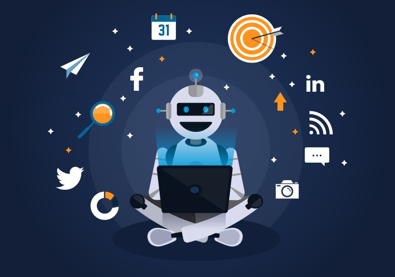
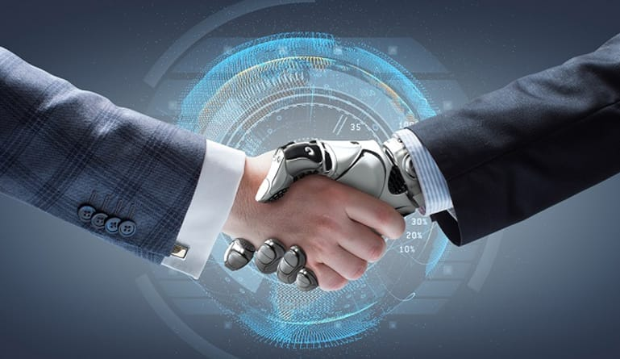
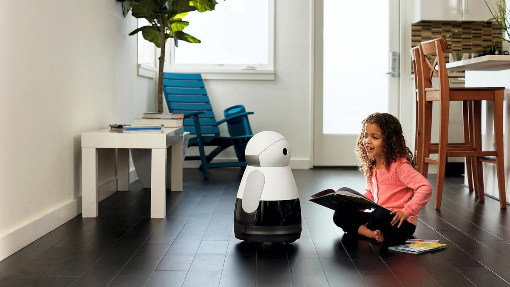

Importance:
1-Everyday Influences of Artificial Intelligence:
Many everyday influences of artificial intelligence are altering the way our daily lives look. If someone from the 1950s travelled through time and arrived in 2019, they would marvel at the way we use our smartphones to navigate around town, how virtual digital assistants such as Alexa and Cortana respond to our queries and would be baffled by our addiction to social media channels such as Facebook, Instagram and Twitter. What is now normal to us and powered by AI, would be utterly foreign to our friend from the past. There's no doubt that artificial intelligence is an integral part of our daily lives. Our financial institutions, legal institutions, media companies and insurance companies are all figuring out ways to use artificial intelligence to their advantage. From fraud detection to writing news storeys with natural language processing and reviewing law briefs, AI’s reach is extensive.2-Artificial Intelligence Influences Business:
As business leaders and innovators race to reach the promise of artificial intelligence to deliver a competitive advantage as well as cost and time savings, the technology is altering industries from finance to manufacturing with new products, processes and capabilities. Companies such as 150-year-old Heineken are using AI, the vast amount of data they collect and the Internet of Things to drive marketing decisions and initiatives, improve operations and customer service. From managing global supply chains to optimising delivery routes, artificial intelligence is helping companies of all sizes and in all industries improve productivity and the bottom line at every stage of the business lifecycle from sourcing material to sales and accounting to customer service. It's allowing companies to design, produce and deliver products and service better than ever before.3-Life-Saving AI:
Artificial intelligence isn't just improving lives; in some cases, it will save lives. There are many companies, including tech companies, that are investing in and researching ways that artificial intelligence can help improve our healthcare system. From figuring out personalised drug protocols to better diagnostic tools and even robots to assist in surgeries, AI is altering our healthcare system from its processes to the care that these organisations provide. In addition to our healthcare systems, AI is likely to be very instrumental in solving the environmental concerns we are experiencing due to global warming. From supporting smart infrastructure to helping to be more efficient with our natural resources and smart agriculture to feed a growing population, AI can augment our human efforts to solve our global challenges. It’s also an integral part of our safety and security systems.4-Entertaining AI :
AI has been deployed to enhance our lives as well. Experiments with AI to compose original compositions from books to music, develop recipes based on what’s currently in the cupboard and even to create works of art are extending the influence of AI on our lives. The AI-powered recommendation engines of Netflix and Spotify help streamline our decision-making process when we are looking for the next show to watch or song to listen to. It's clear that if we took AI away, our world would look vastly different in every way. As the current investments and research result in expanded and perfected uses of AI, we can expect the technology to become even more entangled into our daily existence, workplaces and society.

